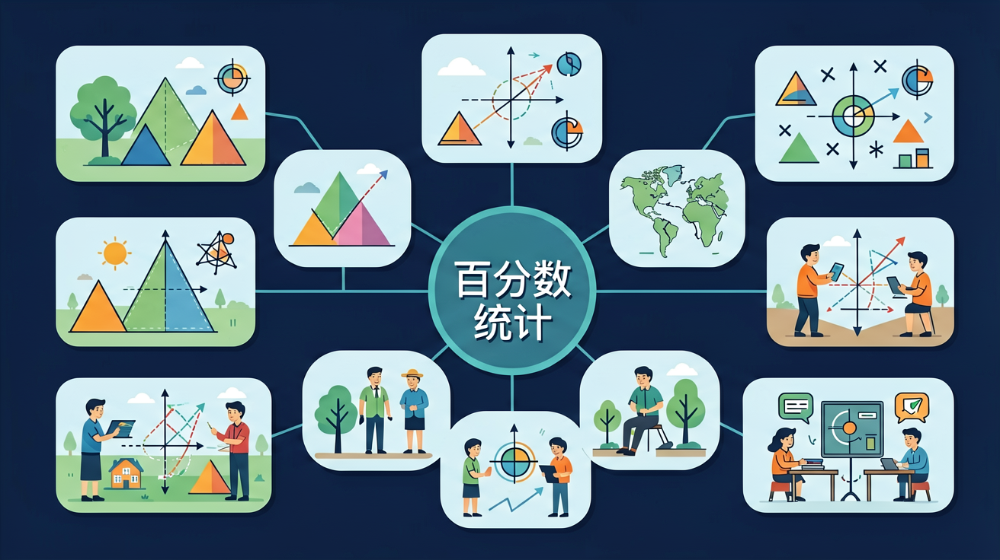

🌍 And（已知）：我们已经学过百分数和统计图，能读取条形图和折线图中的数据
⚡ But（问题）：但是，如何直观显示各部分占总量的比例？比如班级男女生比例、零食消费分配？
💡 Therefore（新知）：因此，我们学习扇形统计图——用圆的各个扇形来表示各部分占总量的百分比
🎯 能说出百分数与分数的互化方法
🎯 能判断扇形统计图中各部分百分比总和是否为100%
🎯 能计算商品打折后的实际支付金额
❓ 为什么篮球比赛罚球命中率要用百分数表示？
❓ 超市打折说'省50%'到底便宜了多少钱？
❓ 扇形统计图里25%的扇形为什么是直角？
学完这一课，这些问题你都能自信地回答。
先来测一测你已经掌握了哪些前置知识，帮助你更好地学习新内容！
第1题：一个圆被平均分成4等份，每份占圆的百分之几？
第2题：条形图和折线图的区别是？
And：学生已掌握分数与小数的基本概念
But：但容易混淆百分数与分数的转化规则
Therefore：本模块帮助学生建立百分数与分数的双向转化能力
百分数就是分母为100的分数，转化时记住'百分之几=几/100'。例如：把75%化成分数，先去掉百分号变成75，再写成分数就是75/100，约分后得3/4。反过来，3/4化成百分数时，先用3÷4=0.75，再把小数乘以100加百分号，得到75%。
🌍 超市打折时经常看到'全场8折'，其实就是80%的意思。如果一件衣服原价200元，打8折就是200×80%=160元。
把60%化成分数是多少？
六年级数学 · 数字背后的秘密！🔍
打折优惠、达标率、全班成绩分析...
百分数让我们更好地理解世界！

征服百分数，成为数据分析小达人！
用进度条直观感受百分数！
📊 点击滑块，感受不同的百分比！
💡 百分数就是"以100为分母"的分数！75% = 75/100 = 0.75
🤔 以下说法，哪个是正确的？
饼图中藏着百分数的秘密！
📊 全班100人最喜欢的课外活动调查
打折、达标率、增减率！生活数学！
百分数统计全方位测试！
分析不同垃圾投放点的达标率差异
扇形统计图适合展示"部分与整体的关系"——就像切蛋糕，每块扇形的大小直接反映该类别占总量的百分比。记住：所有扇形加起来必须是完整的圆（100%）。
💡 用"迁移它"的视角：想想这个知识在哪些生活场景中还会用到？
注意：以上是同学们容易犯的典型错误，做题时要格外小心！
分析扇形统计图、条形图、折线图各自最适合的使用场景
评估：用扇形图展示"2010-2020年全国人口变化"合适吗？
设计一份班级课外活动时间分配的扇形统计图
百分数 ⟺ 分数 ⟺ 小数，轻松搞定！
| 百分数 | 分数 | 小数 |
|---|---|---|
| 75% | 75/100 = 3/4 | 0.75 |
| 50% | 50/100 = 1/2 | 0.5 |
| 25% | 25/100 = 1/4 | 0.25 |
| 20% | 20/100 = 1/5 | 0.2 |
规律：百分数 → 小数：去掉%，除以100（小数点左移2位）
And：学生已认识圆形和角度的概念
But：不理解扇形面积与百分数的对应关系
Therefore：本模块教会学生通过圆心角计算百分比
扇形图的秘密在于：1%对应3.6度圆心角。比如某部分占25%，就用25×3.6=90度画直角扇形。反过来，如果测得某扇形角度是54度，计算比例就是54÷3.6=15%。记住整个圆是360度，就像100%的披萨被切分。
🌍 班级40人中，10人喜欢篮球，在扇形图中篮球部分就是(10÷40)×100%=25%，对应的扇形角是90度，正好是一个直角。
扇形图中72度的部分占总体的多少？
先独立作答，再点选项查看对错与错因。
该社区垃圾分类达标率的正确计算方法是
若将达标率75%用最简分数表示，正确的是
统计图中横轴最适合表示
若新增30户达标，新达标率为____%
答案：90
(150+30)÷200×100%=90%
将达标率标注在扇形统计图上，对应圆心角是____度
答案：270
360°×75%=270°
完成学习后，用这两道题检验你对"百分数统计"的掌握程度！
第1题：扇形统计图中各部分百分比之和必须是？
第2题：如果"水果"占扇形统计图的30%，总消费1000元，水果花了多少？
✅ 强调百分数只表示比例关系
💡 混淆了百分比与具体计量单位
✅ 区分'是20%'和'多20%'的计算差异
💡 未理解基准量的变化
口诀：百分转化很简单，分母一百记心间
类比：像切披萨——100%是整个，25%就是四分之一块
看看生活中哪些地方用到了百分数！
正常体温约36.5°C，发烧是超过37.5°C。
医生说"氧饱和度98%"——这个百分数告诉我们血氧很充足！
手机电量20%时要充电，100%满电。
如果充电速度是每分钟2%，从20%充到100%需要多少分钟？
全校500人参加体育比赛，男生占60%，女生占40%。
①男生有多少人？②女生有多少人？③比男生多多少人？